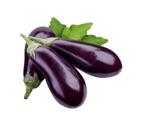
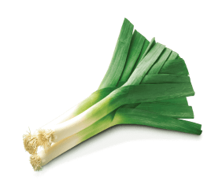
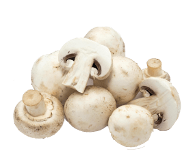
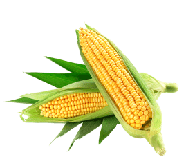
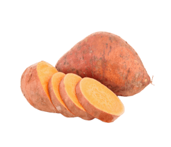
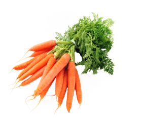

Organic vegetables to your diet today!
Our expertly curated vegetable baskets are made with the freshest, highest quality vegetables available. Fresh Harvest Box has got you covered. Fresh, high-quality vegetables in expertly curated vegetable baskets delivered to you.
To order your vegetable basket, simply follow these easy steps
Our baskets are assembled with care and delivered straight to your doorstep, so you can enjoy the taste of fresh fruit without ever leaving your home.
-
1
Just choose the vegetable you want to order by clicking on the checkboxes next to it.
-
2
Click on the basket and fill out
the form. -
3
Sit back and relax! Your fresh vegetables basket will be delivered.
Discount up to 40%! Taste Taste the vitamins and keep your health
Organic vegetables
Our organic vegetables are hand-picked from local farms and delivered straight to your doorstep, ensuring that you get the freshest and most nutritious produce possible.
-
eggplant
60 uah / kg
eggplant
Eggplant is used in the cuisines of many countries. Due to its texture and bulk, it is sometimes used as a meat substitute in vegan and vegetarian cuisines. Eggplant can be steamed, stir-fried, pan fried, deep fried, barbecued, roasted, stewed, curried, or pickled.
-
leek
50 uah / kg
leek
Leeks have a mild, onion-like taste. In its raw state, the vegetable is crunchy and firm. The edible portions of the leek are the white base of the leaves, the light green parts, and to a lesser extent, the dark green parts of the leaves. The dark green portion is usually discarded because it has a tough texture, but it can be sautéed or more commonly added to stock for flavor.
-
mushrooms
40 uah / kg
mushrooms
Mushrooms may be cooked before consumption to improve texture and lower trace levels of toxic hydrazines. Frying, roasting, baking, and microwaving are all used to prepare mushrooms. Cooking lowers the amount of water present in the food. Mushrooms do not go mushy with long term cooking.
-
corn
60 uah / kg
corn
Corn and cornmeal constitute a staple food in many regions of the world. Corn is used to produce the food ingredient cornstarch. It can be hydrolyzed and enzymatically treated to produce high fructose corn syrup, a sweetener. Corn also may be fermented and distilled to produce Bourbon whiskey. Corn oil is extracted from the germ of the grain.
-
sweet potatoes
50 uah / kg
sweet potatoes
Sweet potatoes are one of the most versatile foods around. They are great for babies and kids, adults, older adults, athletes, etc. Sweet potatoes are nutritionally dense, which is one reason why they are an appealing food to all people. There are so many ways to eat sweet potatoes: from breads and muffins, to pasta and pizza crust.
-
carrot
40 uah / kg
carrot
Carrot can be eaten in a variety of ways. It may be chopped and boiled, fried or steamed, and cooked in soups and stews, as well as baby and pet foods. A well-known dish is carrots julienne. Together with onion and celery, carrots are one of the primary vegetables used to make various broths.
Reviews from our customers
Words of our customers: impressions and opinions about the quality of our services and the freshness of our products.
Fresh Harvest Box has got you covered
Our boxes are packed with delicious, nutritious vegetables, perfect for anyone looking to eat healthier or support local farmers. Order your box today and start enjoying the best that nature has to offer!